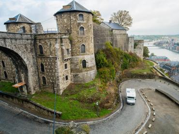
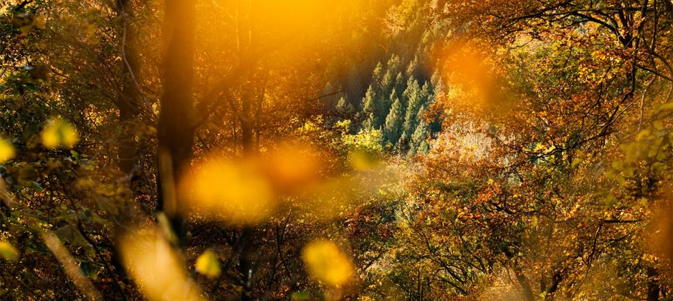
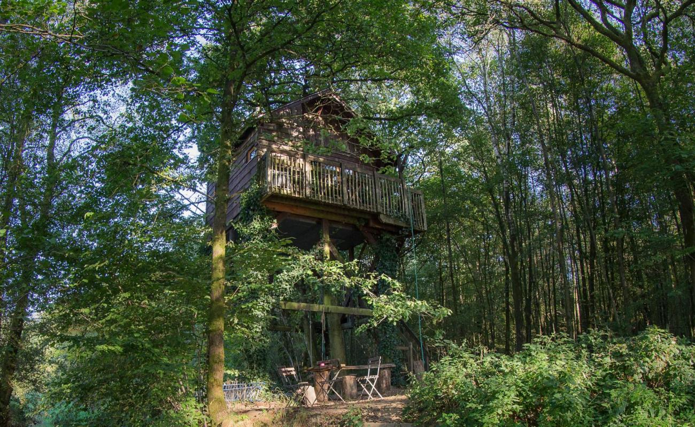
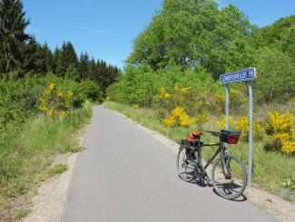
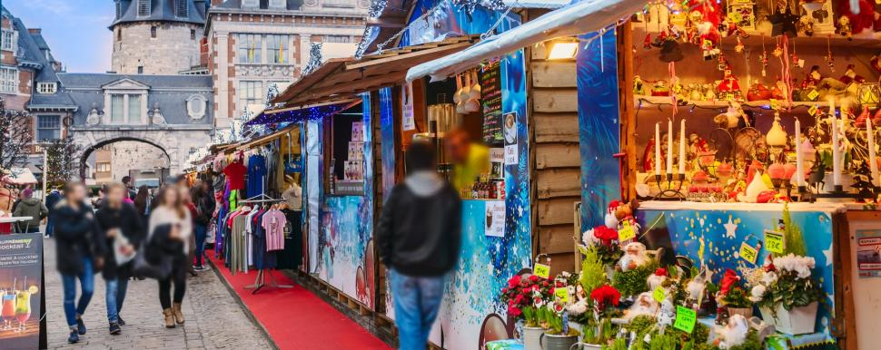
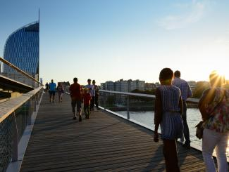
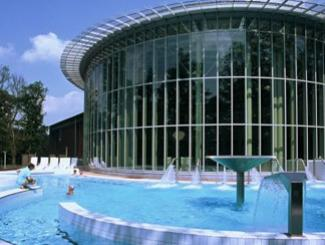

Weekend
Weekendje weg in de Ardennen
Twee, drie dagen eruit: routes, stadjes en logeeradressen voor een kort verblijf.
Een stukje in Frankrijk, in België en in Luxemburg: magische bossen, swingende valleien, oude forten en pittoreske stadjes — de dichtstbijzijnde “bergen” voor Utrecht, Amsterdam, Gent, Antwerpen en Brussel.
Belgische Ardennen
De Belgische Ardennen zijn het hart van het gebied: de valleien van Ourthe, Lesse en Semois, stadjes als Durbuy, Dinant en La Roche-en-Ardenne, en bossen waar je uren doorloopt zonder een weg te kruisen. Vanuit Utrecht sta je er in twee uur; vanuit Antwerpen of Gent nog sneller.
Kies je plek, kies je activiteit — en overnacht op een plek die je thuis niet vindt.

Inspiratie

Twee, drie dagen eruit: routes, stadjes en logeeradressen voor een kort verblijf.



Bestemmingen



Vanaf eind november ruiken de stadjes naar glühwein en houtvuur. Plan je kerstmarktbezoek — en maak er meteen een winterweekend van.